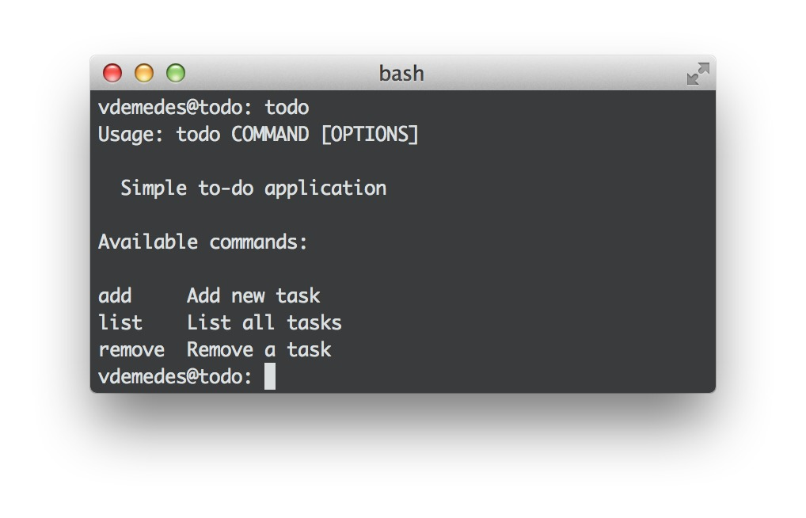

Getting Started
After reading this guide you will know:
- How to create a base for your program
- Understand how Ronin generates your commands
- Configure options for a command
Installation
To install Ronin via npm, simply:
1 | $ npm install --global ronin
|
Notice --global option in that command. This option tells npm to install Ronin in a place, where it’s accessible globally.
It will also install Yeoman, if you don’t have it already, and Ronin’s generators.
Creating your first program
Now, let’s build a theoretical todo list CLI application. Ronin ships with a ronin command-line utility, that helps you get started in seconds. To create a new program and configure it automatically, run:
1 | $ ronin new todo
|
The output of this command should be like this:

It will create a folder named todo and put there all the required files to start. Also, it will run npm install to install dependencies and npm link to make our todo program available globally.
If you will run todo now, you’ll see that a program outputs help message and has a hello command by default:

Let’s open index.js and change the description of our program:
1 2 3 4 5 6 7 8 | var ronin = require('ronin'); var program = ronin({ path: __dirname, desc: 'Simple to-do application' }); program.run(); |
If you will run todo again, you’ll notice an updated description. Next part, learning how Ronin generates your commands.
Commands
As you probably remember from the homepage, Ronin generates commands based on your project structure.
All commands should be placed in commands directory.
Our todo application should list all tasks, create new tasks and also remove them. For Ronin to understand what commands we want, create such files inside commands directory:
1 2 3 4 | - commands/
- list.js
- add.js
- remove.js
|
And Ronin will know, that we want list, add and remove commands. Let’s fill in a required code for those commands. Repeat the following code for all files:
1 2 3 4 5 6 7 8 9 10 11 | var Command = require('ronin').Command; var List = Command.extend({ desc: 'List all tasks', run: function () { } }); module.exports = List; |
Now, if you execute todo, you should see something like this:

Command options
I guess 99% of command-line programs accept options to change their behavior. In our example to-do application, options might come handy to prevent accidental removals of tasks. Let’s implement –force option to confirm the removal.
1 2 3 4 5 6 7 8 9 10 11 12 13 14 15 | var Remove = Command.extend({ desc: 'Removes a task', options: { force: 'boolean' }, run: function (force, name) { if (!force) { throw new Error('--force should be set when removing a task!'); } // it's ok, remove the task with given name } }); |
All should be defined options property. Their values are passed to .run() method first, before other arguments, in the order they were defined.
There is a dedicated guide to options. Read it to discover all functionality for defining options.